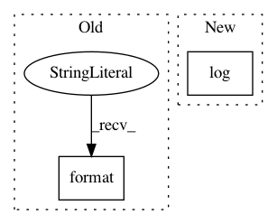

187140c0d694b144a4ec81553eb2d40bb0df453e,functions/LinearSpectralUnmixing.py,LinearSpectralUnmixing,updateRasterInfo,#LinearSpectralUnmixing#,57
Before Change
// output bandCount is number of endmembers + 1 residuals raster
if self.coefficients.shape[0] != kwargs["raster_info"]["bandCount"]:
raise Exception("Incoming raster has {0} bands; endmember signatures "
"indicate {1} input bands.".format(
kwargs["raster_info"]["bandCount"], self.coefficients.shape[0]))
// determine output pixel value method
self.applyScaling = kwargs["method"].lower() == "scaled"
After Change
self.coefficients = np.array(list(self.signatures.values())).T
P = self.coefficients.shape
outBandCount = 1 + P[1] // endmembers + residuals
self.trace.log(str(kwargs["raster_info"]))
inBandCount = kwargs["raster_info"]["bandCount"]
if P[0] != inBandCount:
raise Exception(("Incoming raster has {0} bands; endmember signatures "
In pattern: SUPERPATTERN
Frequency: 3
Non-data size: 2
Instances
Project Name: Esri/raster-functions
Commit Name: 187140c0d694b144a4ec81553eb2d40bb0df453e
Time: 2015-03-07
Author: akferoz@esri.com
File Name: functions/LinearSpectralUnmixing.py
Class Name: LinearSpectralUnmixing
Method Name: updateRasterInfo
Project Name: Esri/raster-functions
Commit Name: 164b392ce45a1baa7523212c451fa3d20cb06450
Time: 2015-05-21
Author: akferoz@esri.com
File Name: setup.py
Class Name:
Method Name: main
Project Name: Esri/raster-functions
Commit Name: c7a3873f70de3dbe8af710e1c62a5332f75725fd
Time: 2015-04-14
Author: rsumbaly@esri.com
File Name: functions/FuzzyMembership.py
Class Name: FuzzyMembership
Method Name: updatePixels